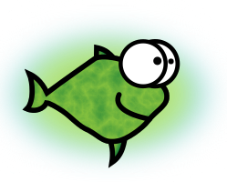

Queen Padmé Tales: Pilot: Queen Amidala vs. the Klingon Warriors - Ongoing Text
Let’s have them all!
Objective
This ambitious series of screenplays breaks a long time taboo of writing Star Wars and Star Trek crossovers, but also aims to make the case for commercial yet free/open (Creative Commons / etc.) fan fiction / crossovers / real person fiction (see e.g: Our mission statement) and screenplays written in easier to write formats than the draconian, finicky, and boring, Hollywood-blessed format.
Abstract
While the birth parents of Queen Padmé Amidala of the Naboo of the Selinaverse (Tiffany Alvord , b. 1992) were killed in a starship crash when she was 1 years old, she was adopted by her aunt, the Archduchess Elizabeth Amidala (Natalie Portman), and her aunt's husband Darth Vader, who volunteered to act as King in effect until Padme's coming of age. As a result, Padmé had a happy childhood until she turned 18 at 2010 and was ready to become the bona fide monarch of Naboo.
Padme already learned enough about managing a planet country by volunteering to help Vader, and he encouraged her to do so. On the surface, she is happy:
She is the richest person in Naboo and one of the richest women in the galaxy.
She has enough time to contribute on Internet content and code sharing sites.
She has many supporting friends, including her boyfriend Anakin Skywalker, a promising Jedi padawan who is about her age, with aspirations for joining the mysterious but revered jedi order of Siths, of which only Vader and Emperor Palpatine are the known extant members.
In practice though, there is the Sword of Damocles:
Critics on online publications and social media who are unhappy with every choice she makes.
A poorly executed takeover attempt by a "real life" celebrity thought to be flawless.
Her boyfriend being so busy with his studies that he becomes awfully laconic even in his emails.
Her spirit friends, who are animated characters from My Little Pony: Friendship Is Magic and other franchises, that everyone can see, hear, photograph, and record, but which many people believe are some kind of trick.
And her biggest pet peeve: her bank account which keeps getting larger, despite her many attempts to reduce it.
Queen Amidala vs. The Klingon Warriors
About this screenplay
Objective
[ An illustrated screenplay crossing Star Wars Ep. I, the Selinaverse (itself crossing Star Trek TNG/DS9, Buffy, Judaism, Israel, Objectivism, etc.) the real world online/offline life in 2010s/2020s, Wayne's World, and My Little Pony.
It aims to launch the "Queen Padmé Tales" web series ( whose format is modelled loosely after Ox Tales ). It stars Tiffany Alvord as Queen Padmé Amidala of the Naboo, and which aims to be codirected and costarred by Natalie Portman. More ambitiously it aims to pave way for commercial crossover / RPF fanart, help reverse copyright maximalism and convert Hollywood and the film industry at large to the open/free/amateur model ( see Copyright Cannibalism ).
We may not succeed, but at least we're going to try.
This screenplay is not written in the Hollywood blessed format because good hackers (= resourceful and rule bending heroes) which include the talented actors and actresses in this film can withstand reading a raw and non-CSS-styled XHTML5 file. That - and hackers like me do not have the time to massage a screenplay into Hollywood's whimsical format only to be rejected, rinse and repeat. ]
Licence
[ Emblem:

This text is Copyright by Shlomi Fish , 2020 and is made available under the Creative Commons Attribution 4.0 Unported Licence (CC-by) (or at your option - any later version). ]
Dedication
[ The Dedication:
This story is dedicated to the memory of Christina Grimmie (1994-2016), a remarkable singer and youtuber, who was killed at age 22 by a fan who was obsessed with her, who almost immediately committed suicide himself.
For what I consider her Magnus Opus see her original "Feelin' Good" song and videoclip whose message I believe is:
«
Be confident. Do the best you can given the time frame. It doesn't have to be perfect. You are allowed to be wrong and say wrong things that you think will still impress people. Try to learn from your mistakes, encourage the critics and try to improve, but realise that some people will always be unhappy and hold you liable for your past opinions, past mistakes, past failures, opinions that they disagree with, your non-normative behaviour, your qualities (age, gender, country, city, ethnicity, religion, ideology, beliefs, wealth, image, personality, cultural tastes, etc.) and your works.
You will likely "fail" to become the "next biggest thing", but even if you do, you can at least fail "in style" and inspire or help even just one person.
Always remember: you are awesome. You can become more awesome, regardless of any "IQ" myths. But you may one day "lose" to someone less qualified than you. That's OK - you can learn from a lost fight and make a comeback. Frankly, heroes do not die ("reputationally" at least) - they accumulate.
As the Indiana Jones' gun vs, sword scene shows, if something takes too long or seems too risky, then think outside the box, challenge the invisible rules, "hack" something, or even temporarily or permanently give up. There's more than one way to do it (even in maths and when writing Python code) and different people like different things.
»
(Also see If— by Rudyard Kipling which has a similar message, and is the most favourite poem among British citizens, a favourite among Israelis, was Ayn Rand’s favourite, and mine.) ]
Filming Version 0.2.x
[ Black screen.
Logo:
Initial Credits. ]
[ Queen Padmé Amidala of the Naboo (Star Wars Ep. 1, played by Tiffany Alvord) is in a corridor with the young Obi-Wan Kenobi and his jedi mentor ( Qui-Gon Jinn ) guarding her with light sabers. On the ends there are two armoured but unarmed Klingon warriors (Star Trek), Worf and Gowron, who fight against a metric ton of "throwaway" lightsabered jedi warriors who rush from the middle to try to take the malevolent Klingons out of the equation somehow. The Klingons have immense strength, agility, and stamina, and use basic and advanced martial arts tactics: kicking the jedis in the crotch; poking their eyes out, stabbing them with their own lightsabers, pushing them onto each other's laser swords in cascade, etc.
Eventually the lesser Jedis are all dead or wounded, and the Klingons rush towards the trio screaming battle cries. The queen looks startled and frightened while Obi-Wan and Qui-Gon are trying to prepare tensely and without much hope to win.
The queen's face becomes tense and focused, she pulls two small crossbows from her waist, looks to her right, aims, and shoots an arrow at the Klingon warrior's forehead; then she turns her head to the left, aims and shoots. The crossbows' arrows pass through the two Klingons' warriors foreheads, who quickly faint and fall forward, dead.
The two Jedis protagonists are relieved, laugh, disable their lightsabers' laser blades, high five and huggle the queen. The queen smiles, hands them the crossbows to study and each jedi examines his crossbow, discussing them with the queen.
A tagline appears on the screen as a mock commercial:
“PersonalQrossBow's 2-in-1 Pocketbow kit. Why not have both?”
( see this.) ]
What Wayne and Garth think
[ The actors of Worf and Gowron rise from their place. Tiffany Alvord is smiling relieved and shakes the hands of the 4 male actors and hugs them compassionately. Natalie Portman (= the director, and the actress who had originally played Queen Amidala in the original Star Wars prequel trilogy) enters the frame and does the same. ]
[ Split frame with Wayne and Garth sitting in an untidy room next to a computer screen. They are the plot programmers. ]
[ Tiffany looks angry, crosses her hands and glances at Natalie with disapproval. ]
[ Fluttershy is seen flying, using a machine gun to shoot at a terrified Rainbow Dash who just robbed a bank, and trying to shoot back at Fluttershy using a smaller one hand gun. As she leaves the frame, Fluttershy pauses and winks at the camera. ]
[ Still from toward the end of Bad Blood: ]
[ Natalie Portman is resentful and disappointed. Tiffany is smiling from Schadenfreude. ]
[ The 5 main actors and Natalie seem contemplative. ]
The film crew disassembles
[ All the film personnel in the filming room sigh and shake their head. ]
[ Tiffany has already taken off the Queen Padmé outfit and is wearing a T-shirt and jeans. ]
[ Fluttershy gasps. ]
[ Fluttershy is relieved ; Rainbow Dash extends her tongue towards her.
Tiffany pats both their heads one by one. ]
[ They leave the frame.
Fade to black.
Message on the screen: "To be continued… Be a hero." ]
Commission Pledge
[ Note that I am offering up to 3,000 USD for a video version of the first stanza which can be either animated or live action, and whose quality I am happy with. ]
[ Despite what the screenplay jokes about, Tiffany Alvord is my first choice to play the Selinaverse's Padmé, in part because she has much better Internet Read/Write web, web 2.0 / social media presence than Natalie Portman does at present (which she may or may not opt to remedy), and which is essential for the future screenplays.
I wouldn't mind George Lucas codirecting or coproducing this series in effect, but Portman seems better as a codirector (including as a presumed one). ]
Ethical Hacking Version
Peaceful Resolution
[ The filming set. ]
[ Worf and Gowron growl. The two closest Jedi knights quickly pull two black blasters and aim them at the Klingons; Obi-Wan and Qui-Gon do the same. ]
[ The Klingons comply. ]
[ Worf and Gowron close their eyes. Padmé sighs. ]
[ Worf and Gowron smile, then laugh, open their eyes and are relieved. ]
[ They laugh. ]
[ Rainbow Dash and Big Mac materialise out of thin air carrying large blasters. ]
[ Discord appears, snaps his fingers and converts Rainbow Dash's and Big Mac's blasters into a Mirror Dice -like ornament. ]
[ He flies in a podracer not unlike the Star Wars Ep. 1's Anakin Skywalker's podracer , with scarves and sunglasses similar to Thelma & Louise, does a U-turn, and leaves the frame. ]
At the café
[ Worf, Gowron, Obi-Wan, Qui-Gon, Big Mac and Rainbow Dash are at the café. Worf and Gowron are reading Padmé’s FAQ on tablets and are laughing and discussing it with the rest. Worf is wearing glasses.
Padmé approaches them wearing a captioned T-shirt, trousers, and a medallion made out of copper or similar, escorted by her Jedi knight acting bodyguard. ]
[ He walks away. Padmé sits down. ]
[ They laugh. ]
[ They laugh. ]
{kind=link}